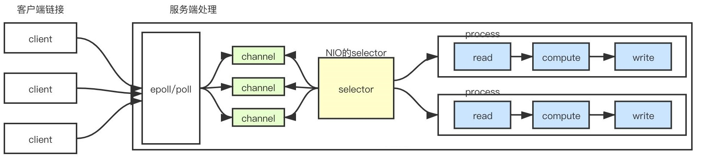
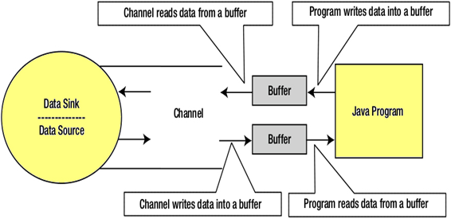
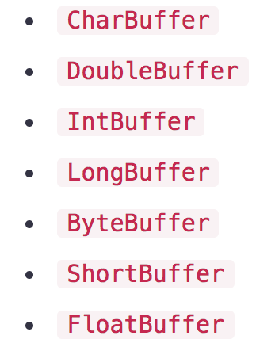
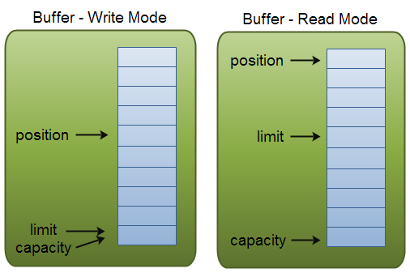
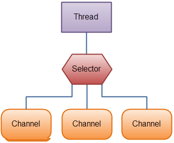
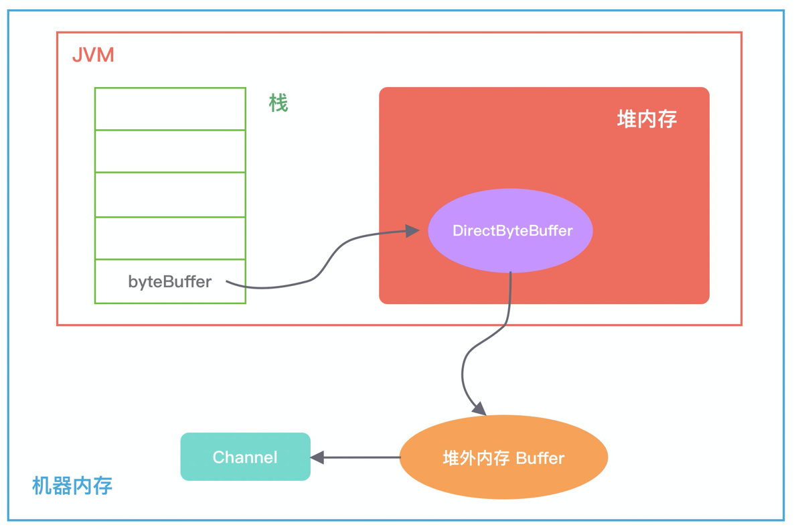
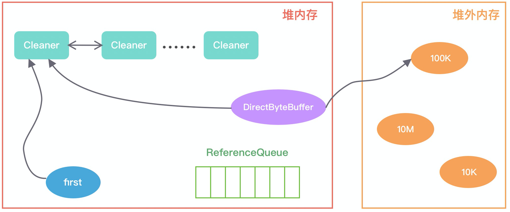
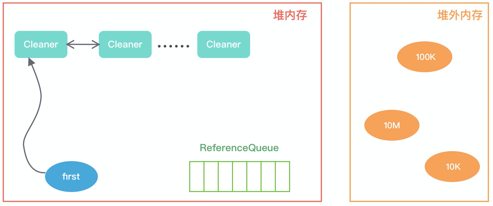

透彻理解Java网络编程（六）——Java NIO
前面的章节，我对Linux的IO模型和零拷贝机制进行了全面讲解。在Java语言中，从JDK 1.4 开始引入了NIO，Java NIO对应Linux IO模型中同步非阻塞模型，同时底层又采用了IO多路复用（IO Multiplexing）技术。
在 JDK 1.4 之前，只有 BIO 一种模式，开发过程相对简单，新来一个连接就会创建一个新的线程处理。随着请求并发度的提升，BIO 很快遇到了性能瓶颈。JDK 1.4 以后开始引入了 NIO 技术，支持 select 和 poll；JDK 1.5 支持了epoll；JDK 1.7 发布了 NIO2，支持 AIO 模型。
Java NIO的核心思想在于：通过Selector线程不断的轮询所有SocketChannel通道，当有事件发生就交给工作线程处理，这样通过一个Selector线程就可以处理大量的请求。由于Selector线程不会阻塞，而是不断轮询事件，所以是一种非阻塞的，同时Selector线程在监听到事件发生后，依然需要通过IO读写数据，所以底层依然是同步操作，所以Java NIO是一种同步非阻塞模型。

本章，我会先对Java NIO中的核心组件进行讲解。接着，对于上一章讲解的Linux零拷贝机制，我会分析Java NIO中的具体实现。
## 一、NIO组件
在 Java NIO 中，有一些核心的组件：
- Buffer：缓冲区，对应操作系统的用户空间中的用户缓冲区（user buffer）。Java程序在读I/O流时，需要先将数据读取到Buffer中，写I/O流时，需要先将数据写到Buffer中。JDK提供了
IntBuffer、LongBuffer、CharBuffer、ByteBuffer等多种针对基础数据类型的Buffer；- Channel：管道，相当于操作系统的内核空间（kernel space）的缓冲区，数据会通过管道与Buffer交互；
- Selector：多路复用器，底层使用了操作系统自身的多路复用函数——
select/poll/epoll，Selector会不断轮询注册的Channel，如果某个Channel上发生了读写事件，Selector就会将这些Channel获取出来，进行IO操作。一个Selector线程可以轮询成千上万的Channel，意味着服务端可以同时接入成千上万的客户端。
1.1 Channel
Java NIO中的所有I/O操作都是通过一个Channel开始的，数据总是从Buffer（缓冲区）写入Channel，或者从Channel读取数据到缓冲区。Channel封装了对数据源的操作，数据源可以看成是操作系统的文件描述符，用于提供平台独立操作功能，数据源的底层就是磁盘、网卡等IO设备了。
数据读取操作：
数据写入操作：
在Java IO中，Channel 主要分为FileChannel和SocketChannel，FileChannel用于文件的读写，SocketChannel通过TCP协议实现网络数据的读写。 其中SocketChannel 又分为三大类：
- 用于监听Server端口的
ServerSocketChannel； - 用于TCP通信的
SocketChannel； - 用于UDP通信的
DatagramChannel。
1.2 Buffer
Buffer缓冲区用于与Channel进行交互，从Channel读取数据，或者写入数据到Channel。
缓冲区本质上是一块可以写入数据或从中读取数据的内存，这块内存被包装成NIO Buffer对象，并提供了一组方法，用来方便的访问该块内存。 对于每个Java原始类型，都有一个缓冲区类型：

> 缓冲区（Buffer）分为堆内存（HeapBuffer）和堆外内存（DirectBuffer），堆外内存（DirectBuffer）在使用后需要应用程序手动回收，而堆内存（HeapBuffer）的数据在 GC 时可能会被自动回收。
Buffer是非线程安全的，它有四个重要的属性： capacity、position、limit、mark ，其中position和limit在读模式和写模式下含义有所不同：
- capacity：Buffer的固定大小值；
- position：表示当前的读/写位置的索引（从0开始），当将Buffer从写模式切换到读模式时（
flip方法），position会被重置为0；- limit：读写操作都不能越过这个下标。写模式下，默认等于capacity，表示能写入的数据上限；读模式下，表示最多能读多少数据；
- mark：为某一读过的位置做标记，便于某些时候回退到该位置。调用mark()会将mark设为当前的position的值，以后调用reset()会将position属性设置为该mark的值。

上述属性值恒满足以下条件：
0 <= mark <= position <= limit <= capacity
举个例子理解下，假设一个缓冲区容量capacity是10，开始指针position指向0。然后写入6个字节数据，写完后，下标0、1、2、3、4、5有数据，指针指向6，即当前position=6。此时，用limit(6)方法将当前位置设为EOF位置，那么，读数据的时候，读到EOF位置就结束了。
我以ByteBuffer为例，来看下Buffer的常用方法：
clear()
把position设为0，把limit设为capacity，一般在把数据写入Buffer前或清空Buffer时调用，但事实上并不会真正清空Buffer中的数据。
flip()
把limit设为当前position，把position设为0，一般在从Buffer读出数据前调用。
rewind()
把position设为0，limit不变，一般在需要重新读写数据时调用。
compact()
将position与 limit之间的数据复制到Buffer的开始位置，复制后position = limit - position，limit = capacity。但如果position 与limit 之间没有数据的话，就不会进行复制。
mark()
标记Buffer中的一个特定position，与reset()配套使用。
reset()
通过调用Buffer.reset()方法恢复到上一次mark标记的position。
最后，我用网上的两张图来说明一般情况下Buffer的读写过程：
（1）写模式下，往Buffer里写（put方法）一个字节，会把postion往后移动一位，写模式下默认limit与capacity相等：

（2）写完数据，需要开始读的时候，将limit设为当前postion，并将postion复位到0。
（3）从Buffer里读（get方法）一个字节，并把postion往后移动一位，上限是limit：

1.3 Selector
Selector可以看成是select/epoll/poll等操作系统底层的多路分离函数的Java包装类，只要Selector监听的任一一个Channel上有事件发生，就可以通过Selector.select()方法检测到，并且使用SelectedKeys得到对应的Channel，然后对它们执行相应的IO操作。
一个Selector可以用于监视多个Channel，比如接受连接，读准备、写准备等事件。通过Selector，一个单线程就可以处理数百、数千、数万、甚至更多的通道。在极端情况下（数万个连接），只用一个线程就可以处理所有的通道，这样会大量地减少线程之间上下文切换的开销：

Channel和Selector之间的关系，通过register（注册）的方式完成，调用Channel.register（Selector sel，int ops）方法，可以将Channel实例注册到一个Selector中。register方法有两个参数：第一个参数，指定通道注册到的Selector实例；第二个参数，指定Selector要监听的IO事件类型。Selector支持的监听事件类型如下：
- 读 : SelectionKey.OP_READ （1）
- 写 : SelectionKey.OP_WRITE （4）
- 连接就绪 : SelectionKey.OP_CONNECT （8）
- 接收就绪 : SelectionKey.OP_ACCEPT （16）
很多Java开源框架和中间件都大量使用了Java NIO进行网络通信，比如Kafka、Zookeeper，我在对应的专栏《透彻理解Kafka》和《透彻理解Zookeeper》中详细分析过它们的底层NIO通信原理，并且在《透彻理解分布式存储》和《透彻理解分布式注册中心》两个专栏中step by step实现了基于原生Java NIO的网络通信组件，感兴趣的读者可以参考阅读。
二、FileChannel
FileChannel 是一个用于文件读写、映射和操作的通道，同时它在并发环境下是线程安全的，基于 FileInputStream、FileOutputStream 或者 RandomAccessFile 的 getChannel 方法可以创建并打开一个文件通道。
2.1 打开FileChannel
我们可以通过下面的方式打开一个FileChannel通道：
RandomAccessFile raf = new RandomAccessFile("/usr/local/books/gone_with_wind.txt", "rw");
FileChannel inChannel = raf.getChannel();
2.2 读取数据
使用FileChannel.read()方法从FileChannel中读取数据，该方法将数据从FileChannel读取到Buffer中，返回读取到的字节数，如果返回-1，表示到了文件末尾：
ByteBuffer buf = ByteBuffer.allocate(48);
int bytesRead = inChannel.read(buf);
2.3 写数据
使用FileChannel.write()方法向FileChannel写数据，该方法的返回值是写入成功的字节数：
String newData = "New String to write to file..." + System.currentTimeMillis();
ByteBuffer buf = ByteBuffer.wrap(newData.getBytes());
while(buf.hasRemaining()) {
channel.write(buf);
}
// 关闭FileChannel
channel.close();
注意：FileChannel.write()是在while循环中调用的。因为无法保证write()方法一次能向FileChannel写入多少字节，因此需要重复调用write()方法，直到Buffer中已经没有尚未写入通道的字节。
我们再来看一个通过FileChannel进行文件读写的完整示例：
/**
* 基于NIO方式复制文件
* @param srcPath 源文件路径
* @param destPath 目标文件路径
*/
public static void nioCopyFile(String srcPath, String destPath) {
File srcFile = new File(srcPath);
File destFile = new File(destPath);
try {
long startTime = System.currentTimeMillis();
FileInputStream fis = null;
FileOutputStream fos = null;
FileChannel inChannel = null;
FileChannel outChannel = null;
try {
fis = new FileInputStream(srcFile);
fos = new FileOutputStream(destFile);
inChannel = fis.getChannel();
outChannel = fos.getChannel();
int length = -1;
ByteBuffer buf = ByteBuffer.allocate(1024);
//从输入通道读取到buf
while ((length = inChannel.read(buf)) != -1) {
//第一次切换：翻转buf，变成读取模式
buf.flip();
int outlength = 0;
//将buf写入到输出的通道
while ((outlength = outChannel.write(buf)) != 0) {
System.out.println("写入的字节数：" + outlength);
}
//第二次切换：清除buf，变成写入模式
buf.clear();
}
//强制刷新到磁盘
outChannel.force(true);
} finally {
IOUtil.closeQuietly(outChannel);
IOUtil.closeQuietly(fos);
IOUtil.closeQuietly(inChannel);
IOUtil.closeQuietly(fis);
}
long endTime = System.currentTimeMillis();
Logger.info("base复制毫秒数：" + (endTime - startTime));
} catch (Exception e) {
e.printStackTrace();
}
}
上述示例中，新建的ByteBuffer，默认是写入模式，inChannel.read方法将从通道inChannel读到的数据写入到ByteBuffer。此后，需要调用缓冲区的flip方法，将ByteBuffer切换成读取模式，才能作为outChannel.write（ByteBuffer）方法的参数，从ByteBuffer读取数据，再写入到outChannel输出通道。
2.4 随机读写
有时候，我们需要对磁盘上的文件进行随机读写，可以使用FileChannel.position()方法实现，设置FileChannel当前的读写位置：
long pos = channel.position();
channel.position(pos +123);
2.5 强制刷盘
我们通过FileChannel.write()往磁盘写数据时，数据不会立即刷到磁盘上，而是先写入操作系统的OS Cache中，最终由操作系统调度刷盘。所以，如果此时系统宕机了，就可能导致数据丢失。
FileChannel.force()方法，可以将通道里尚未刷入磁盘的数据强制刷到磁盘上，force()方法有一个boolean类型的参数，表示是否同时将文件元数据（权限信息等）刷到磁盘上：
channel.force(true);
2.6 文件锁
FileChannel本身是线程安全的（内部基于synchronized做线程同步），也就是说如果有多个线程同时通过一个FileChannel去读/写文件，这个过程是线程安全的。但是考虑另一种场景：如果我们有多个Java应用程序，同时需要访问某个共享盘上的文件，这时候如果保证多进程访问之间的并发安全性呢？
FileChannel提供了文件锁的解决方案，可以通过FileChannel.tryLock()方法尝试获取独占锁/共享锁，从而实现多进程间的并发访问调度控制：
FileOutputStream fos = new FileOutputStream(new File("lock.tct"));
FileLock fl = fos.getChannel().tryLock();
if(fl != null) {
// ...各种文件操作
// 释放锁
fl.release();
}
fos.close();
2.7 零拷贝
FileChannel 定义了 transferFrom 和 transferTo 两个抽象方法，它通过在通道和通道之间建立连接实现数据传输。
- transferTo：通过 FileChannel 把文件里面的源数据写入一个 WritableByteChannel 目的通道；
- transferFrom：把一个源通道 ReadableByteChannel 中的数据读取到当前 FileChannel 的文件里面。
下面给出 FileChannel 利用 transferTo 和 transferFrom 方法进行数据传输的使用示例：
public void transfer() {
try (FileChannel fromChannel = new RandomAccessFile("source.txt", "rw").getChannel();
FileChannel toChannel = new RandomAccessFile("target.txt", "rw").getChannel()) {
long size = fromChannel.size();
fromChannel.transferTo(0, size, toChannel);
} catch (Exception e) {
e.printStackTrace();
}
}
transferTo 和 transferFrom 底层都是基于 sendfile系统调用来实现数据传输的，也就是说省去了2次上下文切换，并且不需要CPU拷贝（见《透彻理解Java网络编程（五）——零拷贝》）。
FileChannelImpl.java中定义了与零拷贝相关的 3 个重要常量：
- transferSupported：用于标记当前的系统内核是否支持
sendfile调用，默认为 true。 - pipeSupported：用于标记当前的系统内核是否支持文件描述符（fd）基于管道（pipeline）的 sendfile 调用，也就是
splice系统调用，默认为 true。 - fileSupported：用于标记当前的系统内核是否支持文件描述符（fd）基于文件（file）的 sendfile 调用，默认为 true。
FileChannelImpl 内部执行零拷贝的流程如下：
- FileChannelImpl 首先执行
transferToDirectly方法，尝试以 Sendfile 的零拷贝方式进行数据拷贝； - 如果系统内核不支持 Sendfile，进一步执行
transferToTrustedChannel方法，以 mmap 的零拷贝方式进行内存映射，这种情况下目的通道必须是 FileChannelImpl 或者 SelChImpl 类型； - 如果上述两步都失败了，则执行
transferToArbitraryChannel方法，基于传统的 I/O 方式完成读写，具体步骤是初始化一个临时的 DirectBuffer，将源通道 FileChannel 的数据读取到 DirectBuffer，再写入目的通道 WritableByteChannel 里面。
对 Linux、Solaris 以及 Apple 系统而言，Java底层是通过native方法执行
sendfile64这个系统调用，从而完成零拷贝操作。Linux 内核2.6.3版本以后， sendfile64 函数不仅可以进行网络文件传输，还可以对本地文件实现零拷贝操作。
三、SocketChannel
在Java NIO中，SocketChannel和ServerSocketChannel是与网络连接相关的。SocketChannel负责连接传输，ServerSocketChannel负责连接的监听。无论是ServerSocketChannel，还是SocketChannel，都支持阻塞和非阻塞两种模式。
在阻塞模式下，SocketChannel的connect、read、write操作都是同步阻塞式的，在效率上与Java BIO的面向流的阻塞式读写相同。在非阻塞模式下，通道的操作是异步、高效率的，这也是相对于传统OIO的优势所在。
3.1 获取SocketChannel通道
在客户端，可以通过SocketChannel.open()获得一个套接字传输通道；然后将socket套接字设置为非阻塞模式；最后，通过
connect()实例方法，对服务器的IP和端口发起连接：
// 获得一个套接字传输通道
SocketChannel socketChannel = SocketChannel.open();
// 设置为非阻塞模式
socketChannel.configureBlocking(false);
// 对服务器的IP和端口发起连接
socketChannel.connect(new InetSocketAddress("127.0.0.1"，80));
while(!socketChannel.finishConnect()){
// 不断地自旋、等待，或者做一些其他的事情……
}
注意：非阻塞情况下，与服务器的连接可能还没有真正建立，
socketChannel.connect()方法就返回了，因此客户端需要不断地自旋检查是否是连接到了主机。
在服务器端，当新连接事件到来时，服务器端的ServerSocketChannel能成功地查询出一个新连接事件，并且通过调用ServerSocketChannel.accept()`方法，来获取新连接的套接字通道：
// 新连接事件到来，首先通过事件，获取服务器监听通道
ServerSocketChannel server = (ServerSocketChannel) key.channel();
// 获取新连接的套接字通道
SocketChannel socketChannel = server.accept();
// 设置为非阻塞模式
socketChannel.configureBlocking(false);
3.2 读取SocketChannel通道
当SocketChannel通道可读时，可以从SocketChannel读取数据，具体方法与前面的文件通道读取方法是相同的。调用read方法，将数据读入缓冲区ByteBuffer。read()方法的返回值，是读取的字节数，如果返回-1，表示读取到对方的输出结束标志，对方已经输出结束：
ByteBufferbuf = ByteBuffer.allocate(1024);
int bytesRead = socketChannel.read(buf);
3.3 写入SocketChannel通道
和前面的把数据写入到FileChannel文件通道一样，大部分应用场景都会调用通道的write方法：
// 写入前需要读取缓冲区，要求ByteBuffer是读取模式
buffer.flip();
socketChannel.write(buffer);
3.4 关闭SocketChannel传输通道
在关闭SocketChannel传输通道前，如果传输通道用来写入数据，则建议调用一次shutdownOutput()终止输出方法，向对方发送一个输出
的结束标志（-1），然后调用SocketChannel.close()方法，关闭套接字连接：
// 终止输出方法，向对方发送一个输出的结束标志
socketChannel.shutdownOutput();
// 关闭套接字连接
IOUtil.closeQuietly(socketChannel);
四、MappedByteBuffer
MappedByteBuffer是Java NIO基于内存映射（mmap）这种零拷贝方式提供的一种实现，它继承自 ByteBuffer：
public abstract class MappedByteBuffer extends ByteBuffer {
MappedByteBuffer(int mark, int pos, int lim, int cap, FileDescriptor fd) {
super(mark, pos, lim, cap);
this.fd = fd;
}
//...
}
FileChannel 定义了一个 map 方法，它可以把一个文件从 position 位置开始的 size 大小的区域映射为内存映像文件：
// FileChannel.java
public abstract MappedByteBuffer map(MapMode mode, long position, long size) throws IOException;
- MapMode：限定对内存映像文件的访问模式，包括只可读（READ_ONLY）、可读可写（READ_WRITE）和写时拷贝（PRIVATE）三种模式。
- position：文件映射的起始地址，对应内存映射区域（MappedByteBuffer）的首地址。
- size：文件映射的字节长度，从 Position 往后的字节数，对应内存映射区域（MappedByteBuffer）的大小。
4.1 使用示例
我们来看下如果通过内存映射来读写磁盘文件。先来看一个读文件的示例：
public void read() {
// 待读取的源文件
Path path = Paths.get("source.txt");
// 打开文件通道 fileChannel 并提供只读权限
try (FileChannel fileChannel = FileChannel.open(path, StandardOpenOption.READ)) {
// 通过 fileChannel 映射到一个只读的内存缓冲区 mappedByteBuffer
MappedByteBuffer mappedByteBuffer = fileChannel.map(READ_ONLY, 0, fileChannel.size());
if (mappedByteBuffer != null) {
// 读取 mappedByteBuffer 中的字节数组即可得到文件数据
byte[] bytes = new byte[mappedByteBuffer.remaining()];
mappedByteBuffer.get(bytes);
String content = new String(bytes, StandardCharsets.UTF_8);
System.out.println(content);
}
} catch (IOException e) {
e.printStackTrace();
}
}
再来看一个写文件的示例：
public void write() {
// 待写入的目标文件
Path path = Paths.get("target.txt");
// 打开文件通道 fileChannel 并提供读、写、数据清空权限
try (FileChannel fileChannel = FileChannel.open(path, StandardOpenOption.READ,
StandardOpenOption.WRITE, StandardOpenOption.TRUNCATE_EXISTING)) {
// 通过 fileChannel 映射到一个可写的内存缓冲区 mappedByteBuffer
MappedByteBuffer mappedByteBuffer = fileChannel.map(READ_WRITE, 0, fileChannel.size());
if (mappedByteBuffer != null) {
// 将目标数据写入 mappedByteBuffer
byte[] bytes = "我是写入的内容".getBytes(Charset.forName("UTF-8"));
mappedByteBuffer.put(bytes);
// 通过 force 方法把缓冲区更改的内容强制写入本地文件
mappedByteBuffer.force();
}
} catch (IOException e) {
e.printStackTrace();
}
}
4.2 底层原理
FileChannel.map()方法的底层，是由子类sun.nio.ch.FileChannelImpl实现的，它的内部通过本地方法map0为文件分配一块虚拟内存，作为它的内存映射区域，然后返回这块内存映射区域的起始地址：
- 文件映射需要在JVM堆中创建一个
MappedByteBuffer对象实例。如果第一次文件映射导致 OOM，则触发GC，休眠 100ms 后再尝试映射，还是失败则抛出异常； - 通过
Util.newMappedByteBuffer()方法或者Util.newMappedByteBufferR()方法，反射创建一个DirectByteBuffer对象实例，其中 DirectByteBuffer 是 MappedByteBuffer 的子类。
FileChannel.map()方法返回的是内存映射区域的起始地址，通过（起始地址+偏移量）就可以获取指定内存的数据。这样一定程度上替代了 read 或 write 方法，底层直接采用sun.misc.Unsafe类的 getByte 和 putByte 方法对数据进行读写。
最后，总结一下 MappedByteBuffer 的特点和不足之处：
- MappedByteBuffer 使用的是堆外的虚拟内存，因此分配（map）的内存大小不受 JVM 的 -Xmx 参数限制，但是也是有大小限制的；
- 当文件大小超出
Integer.MAX_VALUE字节限制时，可以通过 position 参数重新 map 文件后面的内容； - MappedByteBuffer 在处理大文件时性能的确很高，但也存在内存占用、文件关闭不确定等问题，被其打开的文件只有在GC时才会被关闭，而且这个时间点是不确定的；
- MappedByteBuffer 提供了文件映射内存的 mmap 方法，也提供了释放映射内存的 unmap 方法。然而 unmap 是 FileChannelImpl 中的私有方法，无法直接显式调用。 因此，用户程序需要通过 Java 反射方式，调用
sun.misc.Cleaner类的 clean 方法手动释放映射占用的内存区域。
五、DirectByteBuffer
ByteBuffer有一种特殊的类型——java.nio.DirectByteBuffer。DirectByteBuffer对象中包含了指针，引用了一块堆外内存。事实上，DirectByteBuffer是 MappedByteBuffer 的具体实现类。因此，除了允许分配操作系统的直接内存以外，DirectByteBuffer 本身也具有文件内存映射的功能。
FileChannel.map()方法内部通过调用Util.newMappedByteBuffer获取内存映射区域时，实际是创建了一个 DirectByteBuffer 对象实例，这个对象实例是通过反射方式创建的，DirectByteBuffer 有一个单独用于内存映射的构造方法。
5.1 堆外内存
所谓堆外内存，就是把内存对象分配在Java虚拟机堆以外的内存，这些内存直接由操作系统管理，这样就能够在一定程度上减少GC对应用程序造成的影响。同时，对于IO操作而言，直接使用堆外内存可以减少数据拷贝次数，提升性能。
以文件IO为例，假设我们要从磁盘文件中读数据到JVM内存中：
- 传统方式：传统的文件I/O会先将磁盘文件的数据读取到堆外内存中，然后再将堆外内存的数据拷贝到堆内内存，这样我们的Java程序就读到了文件内容。写操作则反之，我们会将堆内内存的数据先拷贝到堆外内存中，然后操作系统会将堆外内存的数据写入磁盘文件；
- DirectByteBuffer方式：这种方式直接在堆外分配内存来存储数据，程序通过JNI直接从堆外内存读取数据（或写入到堆外内存中）。因为直接操作堆外内存，所以不涉及在JVM管控的堆内再分配内存来存储数据了，也就不存在堆内内存和堆外内存数据拷贝的操作了。这样就减少了数据拷贝次数，提升了性能。
很多开源缓存框架，比如Memcached，都会使用堆外内存以提高效率，反复读写以减少GC影响。另外，Netty中也使用到了堆外内存来缓存对象。
5.2 分配
我们可以通过下面的方式来创建一块堆外内存：
// 传入要申请的堆外内存大小，1024字节
ByteBuffer buffer = ByteBuffer.allocateDirect(1024);
DirectByteBuffer对象在创建过程中，内部会通过Unsafe类的native方法allocateMemory进行内存分配，底层调用的是操作系统的 malloc 函数，然后将内存的起始地址和大小存到DirectByteBuffer对象里，这样就可以直接操作这些堆外内存了：

5.3 回收
DirectByteBuffer对象本身属于JVM中的对象，可以被JVM的GC回收，但是DirectByteBuffer引用的堆外内存由操作系统管理，没法被JVM回收。那么堆外内存到底如何回收呢？
事实上，DirectByteBuffer在构造时，内部有一个Cleaner清理器对象。Cleaner.clean()方法会通过Unsafe类调用底层native方法freeMemory完成堆外内存的释放：
// DirectByteBuffer.java
class DirectByteBuffer extends MappedByteBuffer implements DirectBuffer {
DirectByteBuffer(int cap) {
//...
try {
// 分配堆外内存
base = unsafe.allocateMemory(size);
} catch (OutOfMemoryError x) {
Bits.unreserveMemory(size, cap);
throw x;
}
//...
// 创建Cleaner对象
cleaner = Cleaner.create(this, new Deallocator(base, size, cap));//注册钩子函数，释放直接内存
att = null;
}
//...
}
// Cleaner.java
public class Cleaner extends java.lang.ref.PhantomReference<java.lang.Object> {
private static final java.lang.ref.ReferenceQueue<java.lang.Object> dummyQueue;
private static sun.misc.Cleaner first;
private sun.misc.Cleaner next;
private sun.misc.Cleaner prev;
private final java.lang.Runnable thunk;
public void clean() {}
}
但是，什么时候调用Cleaner.clean()方法呢？你一定会说：当然是DirectByteBuffer被垃圾回收的时候啊！那么问题来了，怎么保证DirectByteBuffer对象被回收时一定会调用Cleaner.clean()呢？
事实上，Cleaner是PhantomReference的子类，也就是说它是一个虚引用对象。虚引用是Java语言中最弱一种的引用类型，必须与引用队列 ReferenceQueue 联合使用。那么虚引用的作用到底是什么呢？
首先我们看下，当初始化堆外内存时，内存中的对象引用情况：first 是 Cleaner 类的静态变量，Cleaner 对象在初始化时会加入 Cleaner 链表中，DirectByteBuffer 对象包含堆外内存的地址、大小以及 Cleaner 对象的引用，ReferenceQueue 用于保存需要回收的 Cleaner 对象。如下图所示：

当发生 GC 时，DirectByteBuffer 对象被回收，内存中的对象引用情况发生了如下变化：

此时 Cleaner 对象不再有任何引用关系，在下一次 GC 时，该 Cleaner 对象将被添加到 ReferenceQueue 中，并执行 clean() 方法。clean() 方法主要做两件事情：
- 将 Cleaner 对象从 Cleaner 链表中移除；
- 调用 unsafe.freeMemory 方法清理堆外内存。
至此，我们可以得出结论：使用虚引用的目的，就是为了得知对象被 GC的时机，然后利用虚引用来进行销毁前的一些操作，比如说资源释放等。
所以，cleaner = Cleaner.create(this, new Deallocator(base, size, cap)); 本质就是用于对当前构造的DirectByteBuffer对象的垃圾回收过程进行跟踪。当DirectByteBuffer对象回收时，最终会触发Cleaner.clean()从而释放堆外内存。
虚引用对象，必须和引用队列
ReferenceQueue配合使用，当JVM准备回收一个对象时，如果发现它还有虚引用，就会在该对象回收时，将它的虚引用加入引用队列，在其关联的虚引用出队前，不会彻底销毁该对象。
5.4 使用注意
通过对堆外内存的回收流程的讲解，我们已经知道只有在DirectByteBuffer对象被GC回收后，堆外内存才有机会被回收。所以，我们在使用DirectByteBuffer时，需要特别注意：
DirectByteBuffer 对象有可能长时间存在于堆内内存，所以它很可能晋升到 JVM 的老年代，所以此时 DirectByteBuffer 对象的回收需要依赖 Old GC 或者 Full GC 才能触发清理。如果长时间没有 Old GC 或者 Full GC 执行，那么堆外内存即使不再使用，也会一直在占用内存不释放，很容易将机器的物理内存耗尽。
为了避免这种悲剧的发生，一般都需要通过-XX:MaxDirectMemorySize来显式指定最大的堆外内存大小，当堆外内存的大小超过该阈值时，就会触发一次 Full GC 进行清理回收，如果 Full GC 之后还是无法满足堆外内存的分配，那么程序将会抛出 OOM 异常。
举个例子来说明XX:MaxDirectMemorySize参数作用下的回收流程，假设设置堆外内存最大可以使用1GB，当前已经使用了950MB，然后此时Java程序又要申请80MB堆外内存。那么JVM会判断已经超过了可使用的最大堆外内存阈值，不能直接分配堆外内存，就会执行回收操作：
- 将那些已经GC的DirectBuffer对象引用的堆外内存释放；
- 如果进行一次堆外内存回收后，还不够本次的堆外内存分配的话，则进行
System.gc()。所以，如果你要使用堆外内存，一定不要加上DisableExplicitGC这个参数，因为这个参数会把System.gc()视作空语句，很容易导致OOM； - 如果 9 次尝试后依旧没有足够的堆外内存可用，则抛出异常。
六、总结
本节，我主要对Java NIO的核心组件进行了讲解，并简单介绍了这些组件的基本使用方式，理解本文的基础，是读者已经掌握了我之前所写的《Linux IO模型》和《零拷贝》这两篇文章的内容。此外，我们在使用Java NIO时，一般为了支撑程序的高并发访问，还会对OS本身（我这里主要指Linux）进行一些优化，比如修改文件句柄数的上限值等等。